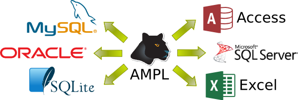

<!doctype html> <html lang="en">
<head>
  <meta charset="utf-8">

  <title>Database and spreadsheet access</title>

  <meta name="author" content="Victor Zverovich">

  <meta name="apple-mobile-web-app-capable" content="yes" />
  <meta name="apple-mobile-web-app-status-bar-style" content="black-translucent" />

  <meta name="viewport" content="width=device-width, initial-scale=1.0, maximum-scale=1.0, user-scalable=no">

  <link rel="stylesheet" href="../../common/reveal.js/css/reveal.css">
  <link rel="stylesheet" href="../../common/reveal.js/css/theme/beige.css" id="theme">

  <!-- For syntax highlighting -->
  <link rel="stylesheet" href="../../common/reveal.js/lib/css/zenburn.css">

  <!-- If the query includes 'print-pdf', include the PDF print sheet -->
  <script>
    if( window.location.search.match(/print-pdf/gi) ) {
      var link = document.createElement('link');
      link.rel = 'stylesheet';
      link.type = 'text/css';
      link.href = '../../common/reveal.js/css/print/pdf.css';
      document.getElementsByTagName('head')[0].appendChild(link);
    }
  </script>

  <style>
  body {background: white;}
  comment {display: none;}

  .reveal h1 {
    padding-bottom: 50px;
  }
  
  .reveal h1,
  .reveal h2 {
    font-size: 200%;
    text-transform: none;
    text-align: center;
    margin: 0;
  }
  .reveal section:first-of-type {
    text-align: center;
  }
  .reveal section {
    text-align: left;
  }
  
  .reveal p {
    margin-top: 10px;
    margin-bottom: 10px;
  }

  .reveal .MathJax_Display {
    margin-top: 20px;
    margin-bottom: 20px;
  }
  .reveal .plot {
    box-shadow: 0 0 20px #888888;
    margin-left: auto; margin-right: auto;
  }
  
  .reveal .transp-image {
    display: block;
    margin-left: auto;
    margin-right: auto;
    border: none;
    box-shadow: none;
  }
  
  /* Fix nohighlight styles. */
  .reveal pre code { display: block; background: #3F3F3F; color: #DCDCDC; }
  
  /* Fix image styles. */
  .reveal section img { border: none; box-shadow: none; }
  
  img.float-right {
    clear:right;
    float:right;
  }

  div .new { color: red; }

  /* D3 styles */
  .node circle {
    fill: #fff;
    stroke: steelblue;
    stroke-width: 1.5px;
  }

  .node {
    font: 20px sans-serif;
  }

  .link {
    fill: none;
    stroke: #ccc;
    stroke-width: 1.5px;
  }
  
  .chart rect {
    fill: steelblue;
  }

  .chart .bar text {
    fill: white;
    font: 20px sans-serif;
    text-anchor: end;
  }
  .chart .axis text {
    font: 20px sans-serif;
    fill: black;
  }
  .chart .x.axis text {
    font: 16px sans-serif;
  }

  .chart .axis path,
  .chart .axis line {
    fill: none;
    stroke: #000;
    shape-rendering: crispEdges;
  }
  .chart .y.axis line,
  .chart .y.axis path {
    display: none;
  }
  </style>

  <script type="text/javascript" charset="utf-8" src="MathBox.js/vendor/domready.js"></script>
  <script type="text/javascript" charset="utf-8" src="MathBox.js/build/MathBox-bundle.js"></script>

  <link href="MathBox.js/base.css" rel="stylesheet" type="text/css" media="screen">  
</head>

<body>
<script src="../../common/reveal.js/lib/js/head.min.js"></script>
<script src="../../common/reveal.js/js/reveal.js"></script>


<div class="reveal">
<!-- Any section element inside of this container is displayed as a slide -->
<div class="slides">

<section data-markdown data-separator="---">
<script type="text/template">
Database and spreadsheet access
===============================

Victor Zverovich

<small><a href="mailto:viz@ampl.com">viz@ampl.com</a></small>

AMPL Optimization Inc.

<br>

<small>University of Santiago de Compostela, <br>
January 18-19, 2016, Spain</small>

---

## Outline

* Overview and features

* Common pitfalls with solutions

* Debugging database connection in AMPL

* Alternatives

* References

---

## Databases and optimization

From SQL AS AN OPTIMIZATION MODELING LANGUAGE by Nathan Brixius:

```cs
minimize 2 x + y
subject to 
x^2 + y^2 <= 1,
x >= 0.
```

can be expressed in SQL:
```sql
CREATE TABLE VARS (
  X FLOAT,
  Y FLOAT
);
SELECT TOP 1 X, Y
FROM VARS
WHERE 
  POWER(X, 2) + POWER(Y, 2) <= 1 AND X >= 0
ORDER BY 2*X + Y ASC;
```

Now back to real world.

---

## Why is database access important?

* Many real-world application already use database systems (Duh)

* Before the API, database access was the only alternative to
  providing AMPL data via files

* Can be more efficient than using files, especially when non-trivial
  parsing is involved in the latter

* Data consistency, remote access

---

## Supported systems

* AMPL supports any database system that has an ODBC driver
  <div style="text-align:center">
  
  </div>

* Connection guides for popular DB systems:
  [Oracle](http://ampl.github.io/tables/oracle.html),
  [MySQL](http://ampl.github.io/tables/mysql.html),
  [SQL Server](http://ampl.github.io/tables/sqlserver.html)
* Non-database systems: Microsoft Excel, text/CSV

---

## Portability

* Database access on major platforms is supported
  <div style="text-align:center">
  
  
  
  </div>

* Linux/Unix: [unixODBC](http://www.unixodbc.org/)

* OS X: [iODBC](http://www.iodbc.org/)

* Windows: Microsoft ODBC

* unixODBC and iODBC are two open-source implementations of the ODBC API

---

## Data mapping

* AMPL data representation maps nicely onto relational database model

* Declarative mapping between AMPL entities and table columns in a database

* Mapping is defined via the `table` declaration

* Scripting commands `read table` and `write table` to do the actual data
  transfer

* One table declaration can be used multiple times, both for data import and export 

---

## Example: diet model

A simple model from "Chapter 2. Diet and Other Input Models:
Minimizing Costs" of the AMPL book.

```python
set NUTR;
set FOOD;

param cost {FOOD} > 0;
param f_min {FOOD} >= 0;
param f_max {j in FOOD} >= f_min[j];
param n_min {NUTR} >= 0;
param n_max {i in NUTR} >= n_min[i];

param amt {NUTR,FOOD} >= 0;

var Buy {j in FOOD} >= f_min[j], <= f_max[j];

minimize total_cost:  sum {j in FOOD} cost[j] * Buy[j];

subject to diet {i in NUTR}:
   n_min[i] <= sum {j in FOOD} amt[i,j] * Buy[j] <= n_max[i];
```

---

## Table declarations

Connection string used in multiple table declarations:
```python
param ConnectionStr symbolic =
  "DRIVER={MySQL ODBC Driver; version 5.2}; DATABASE=test;";
```

Table declarations:
```python
table dietFoods "ODBC" (ConnectionStr) "Foods":
   FOOD <- [FOOD], cost IN, f_min IN, f_max IN,
   Buy OUT, Buy.rc ~ BuyRC OUT, {j in FOOD} Buy[j]/f_max[j] ~ BuyFrac;

table dietNutrs IN "ODBC" (ConnectionStr) "Nutrients":
  NUTR <- [NUTR], n_min, n_max;

table dietAmts IN "ODBC" (ConnectionStr) "Amounts":
  [NUTR, FOOD], amt;
```

Each table declaration corresponds to a database table.

---

## Reading and writing tables

The following script reads the data from three database
tables, solves the problem and writes the data to the database.

```python
model diet.mod;

# Table declarations skipped.

read table dietFoods;
read table dietNutrs;
read table dietAmts;
                  
solve;

write table dietFoods;
```

Table `dietFoods` is used twice, once for reading and once for writing.

---

## Results

The results are now available in the database.

For example, we can query them using MySQL Workbench:

<div style="text-align: center;">

</div>

---

## Architecture

<div style="text-align: center;">

</div>

---

## Table handlers

* Plug-ins that provide data import and export functionality

* Defined in AMPL function libraries and can be loaded dynamically

* Standard table handlers:

  * `tab` for simple text format
  * `bit` for simple binary format
  * `odbc` for ODBC data sources
  * `tableproxy` for connecting via a proxy

---

## Custom table handlers
  
* Default table handlers are defined in the `ampltabl` library

* It is possible to define custom handlers

* Same extension mechanism as AMPL function libraries use

```c++
void funcadd(AmplExports *ae) {
  add_table_handler(ReadFunc, WriteFunc, description, 0, 0);
}
```

* The AMPL Solver Library provides the necessary APIs

---

## .tab & .bit files

* `.tab` files store relational tables in a simple text format

* `.bit` files are their binary counterparts

* Example:

```nohighlight
ampl.tab 1 3
FOOD    cost    f_min   f_max
BEEF    3.19    2       10
CHK     2.59    2       10
FISH    2.29    2       10
HAM     2.89    2       10
MCH     1.89    2       10
MTL     1.99    2       10
SPG     1.99    2       10
TUR     2.49    2       10
```

---

## Tableproxy

* A special table handler and a proxy executable

* Allows using 32-bit database drivers with 64-bit AMPL and vice versa.

* Provides a way to access databases on remote computers.

* Example:

```python
table dietFoods 'tableproxy' 'odbc' 'diet.mdb' 'Foods':
   FOOD <- [FOOD], cost IN, f_min IN, f_max IN,
   Buy OUT, Buy.rc ~ BuyRC OUT, {j in FOOD} Buy[j]/f_max[j] ~ BuyFrac;
```

* Strings following `'tableproxy'` are passed to the ODBC table handler.

---

## SQL statements

* 
  SQL query can be specified in the table declaration via `SQL=...`

* The query is run and the result is interpreted as usual

* Can be used to call stored procedures

Example:

```python
table cheapFoods IN "ODBC" "diet.mdb"
  "SQL=SELECT * FROM Foods WHERE cost <= 2.49":
  FOOD <- [FOOD], cost, f_min, f_max;
```

---

## Common pitfalls

* 
  32-bit/64-bit mismatch

* Read-only database

* ODBC driver not installed

* Connection string and SQL errors

---

## 32-bit/64-bit mismatch

Using wrong ODBC version on 64-bit version of Windows:

* 32-bit: `\Windows\SysWOW64\odbcad32.exe`

* 64-bit: `\Windows\system32\odbcad32.exe`

* 
  The two versions are independent and can have different sets
  of installed drivers and different data sources not accessible
  from the other version.

* Architecture of the ampl executable should match the one
  of the required version of ODBC unless table proxy is used.

---

## Read-only database

* The read-only attribute is the default in some versions of MS ODBC driver for Excel.

* This is indicated by the following verbose error message:

```nohighlight
errmsg = "[Microsoft][ODBC Excel Driver] Cannot modify the design of
table '<name>'.
It is in a read-only database."
```

* Solution: set the read-only attribute to 0 via a DSN:

```
[ODBC]
DRIVER=Microsoft Excel Driver (*.xls)
ReadOnly=0
DBQ=test.xls
```
```python
table test 'ODBC' 'test.dsn': ...
```

---

## ODBC driver not installed

* 
  Required ODBC driver is not installed or a wrong version
  installed (including 32-bit/64-bit mismatch).

* Often happens when trying to read `.xlsx` and only the
  old driver that supports `.xls` is installed.

* Solution: install Microsoft Access Database Engine 2010 Redistributable:

  https://www.microsoft.com/en-us/download/details.aspx?id=13255

---

## Listing ODBC drivers

* Unix-like system - one of the following commands:
```
$ myodbc-installer -d -l
$ odbcinst -d -q
```

* 
  Windows - ODBC Administrator (mind potential 32-bit/64-bit mismatch!)

* OS X: ODBC Manager: http://www.odbcmanager.net/

---

## Connection string and SQL errors

* Connection strings and SQL statements can be complex, easy to make a mistake.

* Try debugging them using a database client first.

* Use the correct identifier quotes in SQL, e.g. backquote (`) is the default in MySQL.
  Only affects SQL because AMPL detects quotes automatically.

---

## Debugging

* Getting the list of loaded table handlers:

```python
ampl: display _HANDLERS;
set _HANDLERS := tab bit odbc tableproxy;
```

* Getting the list of loaded libraries:

```python
ampl: display _LIBS;
set _LIBS := ampltabl.dll;
```

* Getting handler information:

```nohighlight
ampl: print _handler_desc['odbc'];
AMPL ODBC handler (20131212): expected 2-8 strings before ":[...]":
  'ODBC', connection_spec ['ext_name'] [option [option...]]
Connection_spec gives a connection to the external table.  If the table's
external name differs from the AMPL table name, the external name must be
given in place of 'ext_name'.  For IN tables, 'SQL=sqlstmt' can appear in
place of 'ext_name', where sqlstmt is a SQL statement, such as a SELECT
statement.  Possible options, explained below:
...
```
---

## Debugging: verbose mode

Add `verbose` option to the table declaration:

```python
table test 'ODBC' 'test.dsn' 'verbose': ...
```

Output:

```nohighlight
AMPL ODBC driver, version 20131212.
ODBC drivers...
        "SQL Server" -- no associated extensions.
        "Microsoft ODBC for Oracle" -- no associated extensions.
        "Microsoft Access Driver (*.mdb)" for *.mdb
...
Connection string: "DBQ=test.xls;DefaultDir=.;Driver=
{Microsoft Excel Driver (*.xls)};DriverId=790;MaxBufferSize=2048;
PageTimeout=5;ReadOnly=0;"
CREATE TABLE `test` (`P` NUMBER) returned -1
sqlstate = "S0001"
errmsg = "[Microsoft][ODBC Excel Driver] Table 'test' already exists."
native_errno = -1303
"DROP TABLE `test`" succeeded.
```

---

## Error handling

* Builtin symbolic param `_table_errmsg`: last error message
  from the most recent "write table" or "read table" command,
  "" if none.
* Option `table_errbreak` determines whether "write table"/
  "read table" report errors and terminate processing of
  commands, or suppress error reports and record the last error
  in `_table_errmsg`.
* `$table_errorbreak` (default 0) is bitwise OR of

  1 - suppress error reporting for "write table" <br>
  2 - suppress error reporting for "read table" <br>
  4 - for iterated "read table" and "write table" commands, do all iterations despite errors

---

## Alternatives

Databases are a popular choice for importing and exporting data in optimization
applications written in AMPL but there are alternatives:

* AMPL data files

* Reading data with the `read` command

* Writing data with `print`, `display` or `printf`

* AMPL API, in particular, `DataFrame` for bulk data transfer

* Excel-based Solver Studio for AMPL

---

## Spreadsheet warning

* Spreadsheets can be convenient, but often lead to poor practices esp. when the project grows.

* Example: JP Morgan's 129 page report on the $6 billion trading loss partly attributed to an error using Excel:

> the model operated through a series of Excel spreadsheets, which had to be completed manually, by a process of copying and pasting data from one spreadsheet to another...

* Poor or no testing facilities, hidden logic, difficult to track changes - opposite of good practices.

<small>See also Norske Skog report with similar conclusions.</small>

---

## Solver Studio for AMPL

<div style="text-align: center;">

</div>

---

## Solver Studio Features

* Create and edit AMPL models without leaving Excel

* Solve using local solvers or in the cloud via NEOS

* Integrated model and data editors

* Automatic data exchange with model

* Freely available from http://solverstudio.org

---

## References

* Chapter 10. Database access in the AMPL book: http://ampl.com/BOOK/CHAPTERS/13-tables.pdf

* Connection guides:

  * MySQL: http://ampl.github.io/tables/mysql.html
  * Oracle: http://ampl.github.io/tables/oracle.html
  * SQL Server: http://ampl.github.io/tables/sqlserver.html

* AMPL Table Handlers: http://ampl.com/resources/database-and-spreadsheet-table-handlers/

* Solver Studio for AMPL: http://solverstudio.org/languages/ampl/

---

## Questions?

</script>
</section>

</div>
</div>

<script>
  // Full list of configuration options available here:
  // https://github.com/hakimel/reveal.js#configuration
  Reveal.initialize({
    controls: true,
    progress: true,
    history: true,
    center: true,

    theme: Reveal.getQueryHash().theme, // available themes are in /css/theme
    transition: Reveal.getQueryHash().transition || 'default', // default/cube/page/concave/zoom/linear/fade/none

    // Parallax scrolling
    // parallaxBackgroundImage: 'https://s3.amazonaws.com/hakim-static/reveal-js/reveal-parallax-1.jpg',
    // parallaxBackgroundSize: '2100px 900px',

    math: {
      mathjax: 'https://cdnjs.cloudflare.com/ajax/libs/mathjax/2.7.1/MathJax.js',
      config: 'TeX-AMS-MML_HTMLorMML'  // See http://docs.mathjax.org/en/latest/config-files.html
    },

    // Optional libraries used to extend on reveal.js
    dependencies: [
      { src: '../../common/reveal.js/lib/js/classList.js', condition: function() { return !document.body.classList; } },
      { src: '../../common/reveal.js/plugin/markdown/marked.js', condition: function() { return !!document.querySelector( '[data-markdown]' ); } },
      { src: '../../common/reveal.js/plugin/markdown/markdown.js', condition: function() { return !!document.querySelector( '[data-markdown]' ); } },
      { src: '../../common/reveal.js/plugin/highlight/highlight.js', async: true, callback: function() { hljs.initHighlightingOnLoad(); } },
      { src: '../../common/reveal.js/plugin/zoom-js/zoom.js', async: true, condition: function() { return !!document.body.classList; } },
      { src: '../../common/reveal.js/plugin/notes/notes.js', async: true, condition: function() { return !!document.body.classList; } },
      { src: '../../common/reveal.js/plugin/math/math.js', async: true }
    ]
  });
  //Reveal.addEventListener('slidechanged', function(event) {
  //  document.getElementById("logo").style.visibility = Reveal.isFirstSlide() ? 'hidden' : 'visible';
  //});
</script>

<!-- Google Analytics -->
<script type="text/javascript">
  var _gaq = _gaq || [];
  _gaq.push(['_setAccount', 'UA-20116650-1']);
  _gaq.push(['_trackPageview']);
  (function() {
    var ga = document.createElement('script'); ga.type = 'text/javascript'; ga.async = true;
    ga.src = ('https:' == document.location.protocol ? 'https://ssl' : 'http://www') + '.google-analytics.com/ga.js';
    var s = document.getElementsByTagName('script')[0]; s.parentNode.insertBefore(ga, s);
  })();
</script>
</body>
</html>
